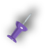

出生年月
1996年5月26日
邮件地址
18232819329@163.com
联系方式
18232819329
居住地址
北京

精通HTML、CSS熟练进行页面开发，具备良好代码规范并独立快速完成页面开发；
熟练掌握 HTML5以及CSS3新特性,并且运用到网页开发当中;
熟悉JavaScript代码，能够快速独立完成页面功能;
熟练掌握 jQuery 框架技术,了解基本原理,能够使用 jQuery 实现页面功能;
能够独自解决部分程序问题及错误；
熟练掌握Bootstrap响应式布局，能够熟练开发响应式web应用；
熟练掌握vue.js框架,进行网页开发

承德选房网
参与了承德宣房网子页的制作，与其他人合作完成
技术点：利用HTML5、CSS3、javascript、jQuery等制作网站
网页特色：加强了用户体验感受，网页整体美观大方，吸引了用户眼球，增多了网页点击量，用户登录注册等功能